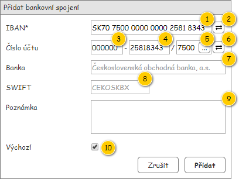

Formulář slouží k editaci entity Bankovní spojení, která je jeho nepovinným vstupním parametrem.

| Callout | Komponenta | Nadpis | Typ komponenty | Příklad hodnoty | Hodnota | Výchozí hodnota | Formát | Zpřístupněná | Viditelná | Chování | Validace | Poznámka |
|---|---|---|---|---|---|---|---|---|---|---|---|---|
| 1 | IBAN | IBAN* | TextBox | SK70 7500 0000 0000 2581 8343 | Entita Bankovní spojení. | – | Skupiny po 4 znacích oddělené mezerou. | Vždy | Vždy | – | Povinný. Maximálně 35 znaků. | – |
| 2 | Převod na číslo účtu | – | Button
| – | – | – | – | Vždy | Vždy | Převod na číslo účtu | – | – |
| 3 | Předčíslí | Číslo účtu | TextBox | 000000 | Entita Bankovní spojení. | – | Vždy | Vždy | – | Celé číslo. Maximálně 6 číslic. | Mezi předčíslím a číslem účtu je uveden znak '-'. | |
| 4 | Číslo účtu | – | TextBox | 25818343 | Entita Bankovní spojení. | – | <Číslo účtu> | Vždy | Vždy | – | Celé číslo. Maximálně 10 číslic. | Mezi číslem účtu a kódem banky je uveden znak '/'. |
| 5 | Kód banky | – | AutoSuggestTextBox | 7500 | Entita Banka – atribut Banka entity Bankovní spojení. | – | Vždy | Vždy | Pokud je zadán kód banky ručně (a neodpovídá žádnému kódu z nabídky), dojde po opuštění pole k vymazání obsahu polí Banka a SWIFT. | Maximálně 4 znaků. Pouze čísla. | Je možné zadat i vlastní hodnotu. | |
| 6 | Převod na IBAN | – | Button
| – | – | – | – | Vždy | Vždy | Převod na IBAN | – | – |
| 7 | Název banky | Banka | TextBox | Československá obchodná banka, a.s. | Entita Banka – atribut Banka entity Bankovní spojení. | – | Nikdy | Vždy | – | – | – | |
| 8 | SWIFT banky | SWIFT | TextBox | CEKOSKBX | Entita Banka – atribut Banka entity Bankovní spojení. | – | Nikdy | Vždy | – | – | – | |
| 9 | Poznámka | Poznámka | MultilineTextBox | Bankovní spojení pro vrácení zálohy. | Entita Bankovní spojení. | – | Vždy | Vždy | – | Maximálně 255 znaků. | – | |
| 10 | Výchozí bankovní spojení | Výchozí | CheckBox | TRUE | Entita Bankovní spojení. | TRUE | Vždy | Vždy | – | – | – |
V případě, že je vyplněn validní IBAN pro Slovenskou republiku, dojde po stisknutí odpovídajícího tlačítka k převodu na číslo účtu. Vyplní se tedy hodnoty v polích pro předčíslí, číslo účtu a kód banky. Změna kódu banky pak vyvolá Výběr kódu banky.
Pokud není IBAN v odpovídajícím formátu, je zobrazeno chybové hlášení o této skutečnosti (TODO: kód hlášky, viz Systémové hlášky).
Samotný algoritmus a podrobnější informace jsou pak uvedeny zde: Převod z IBAN na číslo účtu.
V případě, že je vyplněno číslo účtu ve správném formátu, dojde po stisknutí odpovídajícího tlačítka k převodu na IBAN. Vyplní se tedy hodnota v poli pro IBAN. Funkce je k dispozici pouze pro banky dostupné v nabídce pole pro zadání kódu banky.
Pokud nejsou vyplněna potřebná pole čísla účtu, nebo není výsledný IBAN v odpovídajícím formátu (není tedy v pořádku číslo účtu), je zobrazeno chybové hlášení o této skutečnosti (TODO: kód hlášky, viz Systémové hlášky).
Samotný algoritmus a podrobnější informace jsou pak uvedeny zde: Převod z čísla účtu na IBAN.
Pokud dojde k výběry kódu banky, vyplní se odpovídající hodnoty i v polích pro název banky a SWIFT.